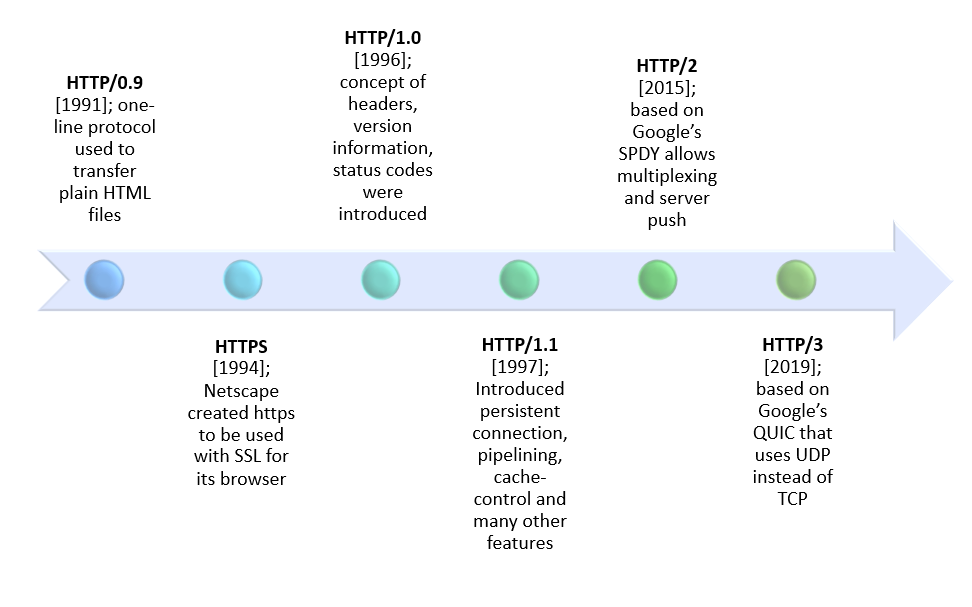

History & Versions
Narrative (from Topic Page)
The Early Days of HTTP
The Hypertext Transfer Protocol (HTTP) began in 1991 at CERN, created by Tim Berners-Lee as part of the first web system.
The initial version, called HTTP/0.9, could only retrieve simple HTML pages using a single command called GET.
There were no headers, status codes, or support for images and scripts. It was enough for the early web when pages were mostly plain text.
Expansion and HTTP/1.0
As the web grew, more features were needed. In 1996, HTTP/1.0 introduced headers, allowing browsers and servers
to share details like content type and caching information. It also added methods such as POST so users could submit data
through forms. However, each file required a new connection, slowing websites with multiple images or resources.
HTTP/1.1 and the Web Boom
Released in 1997, HTTP/1.1 became the foundation of the modern web. It allowed persistent connections, chunked data transfer, and the use of host headers—making it possible for many websites to share one IP address. This version powered the growth of the internet during the early 2000s and remains widely used today.
\1Added persistent connections, chunked transfer encoding, and the Host header for virtual hosting. It improved efficiency but still suffered from head‑of‑line blocking that encouraged multiple parallel TCP connections.\3 HTTP/2 was standardized in 2015 and has seen broad adoption, although HTTP/1.1 remains widely used. It introduces a binary framing layer that multiplexes multiple requests and responses over a single TCP connection, along with HPACK header compression and request prioritization to reduce latency. Many large providers adopted HTTP/2 to improve performance and network efficiency. Because HTTP semantics are unchanged, it remains backward compatible with HTTP/1.1, enabling gradual, low-risk migration.
Summary (from History & Versions)
History & Versions
HTTP began as a minimal protocol (0.9) and matured through 1.0/1.1 to HTTP/2 and HTTP/3. Below is a feature snapshot of each version, along with brief notes.
| Version | Transport | Key Features | Limitations Addressed |
|---|---|---|---|
| HTTP/0.9 | TCP | GET only, HTML only | Earliest prototype |
| HTTP/1.0 | TCP | Headers, content types, multiple methods (e.g., POST) | Still one request per connection, causing latency |
| HTTP/1.1 | TCP | Persistent connections, chunked encoding, Host header | Head-of-line blocking remains; multiple connections needed |
| HTTP/2 | TCP | Binary framing, multiplexing, header compression, server push | Still subject to transport-layer HOL blocking |
| HTTP/3 | QUIC (UDP) | TLS 1.3 by default, stream-level multiplexing, faster handshakes | Reduces HOL blocking and improves mobility & reliability |
Takeaways
- 1.1 enabled the growth of shared hosting via the Host header.
- 2 brought multiplexing but stayed on TCP.
- 3 moved to QUIC to tackle transport-layer limitations.